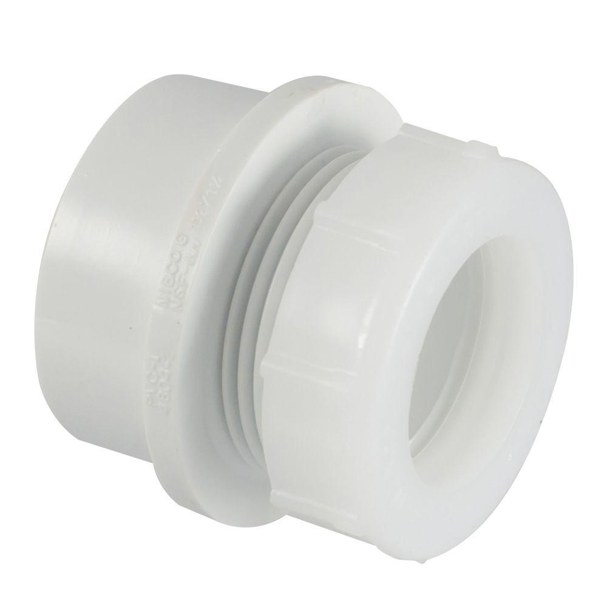

Chapter 5 Materials and Tools List
This chapter describes the materials and tools needed to construct a basic PVC didgeridoo and a basic PVC paixiao. Please note an optional beeswax mouthpiece may be constructed by molding warm, soft wax around one end of the PVC didgeridoo.
5.1 PVC Didgeridoo
| Material | Spec | Qty (2) | Qty (100) |
|---|---|---|---|
| PVC pipe | 1.5“, Schedule 40 | 10’ | 50 |
| PVC trap adapter | 1.5“, Schedule 40 | 1 | 100 |
| PVC Reducing Coupling | 3.0“x1.5”, Schedule 40 | 1 | 100 |
| Sandpaper | Medium Grit | as needed | as needed |
| Alcohol Prep Pads | - | as needed | as needed |
| Name | Spec | Qty (2) | Qty (100) |
|---|---|---|---|
| Hacksaw | small | 1 | 1 per pair |
| Digital Tuner | multi-instrument, clip-on or phone app | 1 | 10 |
| Permanent markers, multicolor | any color | any | as needed |
| Safety glasses | polycarbonate, ANSI Z87.1-2015 or similar | 1 per student | 1 per student |
5.2 PVC Paixiao
| Materials | Specifications (Imperial) | Quantity or Length (Imperial) |
|---|---|---|
| PVC pipe | 0.5“, Schedule 40 | 3’ |
| Small coins | ~0.5" diameter | 3 to 5, as needed |
| Sandpaper | Medium Grit | 1 |
| Alcohol Prep Pads | - | as needed |
| Duct tape or hot glue | - | as needed |
| Name | Spec | Qty (2) | Qty (100) |
|---|---|---|---|
| Hacksaw | small | 1 | 1 per pair |
| Digital Tuner | multi-instrument, clip-on or phone app | 1 | 10 |
| Permanent markers, multicolor | any color | any | as needed |
| Safety glasses | polycarbonate, ANSI Z87.1-2015 or similar | 1 per student | 1 per student |
5.3 Materials and Tools Gallery
](img/pvcPipe.jpg)
Figure 5.1: PVC Pipe, Image Source

Figure 5.2: PVC Trap Adapter, Image Source
](img/reducingCoupling.jpg)
Figure 5.3: PVC Reducing Coupling, Image Source
Figure 5.4: Medium-grit sandpaper, Image Source
](img/alcoholPrepPads.jpg)
Figure 5.5: Alcohol prep pads, Image Source
](img/tuner.png)
Figure 5.6: Clip-on tuner, Image Source
](img/markers.png)
Figure 5.7: Permanent markers, Image Source
](img/glasses.jpg)
Figure 5.8: Safety glasses, Image Source